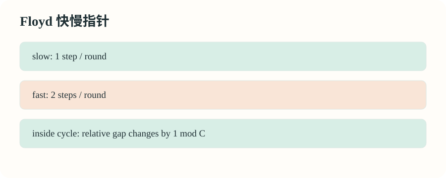
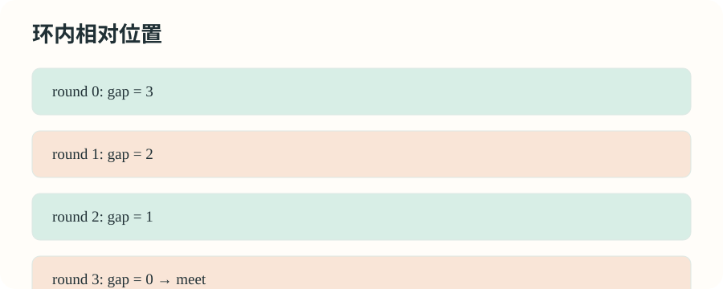
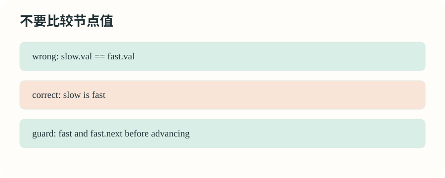

LEETCODE 141 / EASY / DATA STRUCTURES
环形链表
Linked List Cycle · 给定单链表头节点，判断沿 next 指针前进时是否会再次访问某个节点。pos 只描述尾节点连接位置，不会作为参数传入。3 → 2 → 0 → -4 且尾节点指回 2，返回 True；普通链表返回 False。
01 · 从直观方法到 O(1) 空间
哈希集合可以记录已经访问过的节点：重复访问就说明存在环。它需要 O(n) 空间。Floyd 算法则让 slow 每轮走一步、fast 每轮走两步；无环时 fast 到达 None，有环时两者最终相遇。
02 · 状态与不变量
两个指针始终沿真实 next 引用移动。进入环后，fast 相对 slow 每轮多走一个节点。设环长为 C，相对位置在模 C 的环上每轮变化 1，最多 C 轮就会回到同一位置。

03 · 关键步骤交互
下面是示意性关键帧，不是对任意输入的在线执行。

步骤 1 / 4
起点
slow 与 fast 都位于节点 3。
两个指针从同一个 head 出发。
当前第 1 步
04 · 正确性证明
无环时，next 链有限，fast 或 fast.next 最终为空，循环退出并返回 False。有环时，进入环后两指针的相对位置每轮变化一个节点（模 C）。有限环上的相对位置必然经过 0，因此两指针最终引用同一个节点，返回 True。注意必须用对象身份比较，而不是比较节点值。
05 · Python 实现
class Solution:
def hasCycle(self, head: Optional[ListNode]) -> bool:
slow = fast = head
while fast and fast.next:
slow = slow.next
fast = fast.next.next
if slow is fast:
return True
return False时间 O(n)：每轮至少推进指针，最多遍历非环部分与环的一定倍数。辅助空间 O(1)：只维护两个节点引用。
06 · 易错点
不要比较 slow.val 和 fast.val，因为不同节点可以有相同值。访问 fast.next.next 前必须检查 fast 与 fast.next。空链表返回 False。寻找环入口是另一道题（#142），本题只判断是否存在环。
